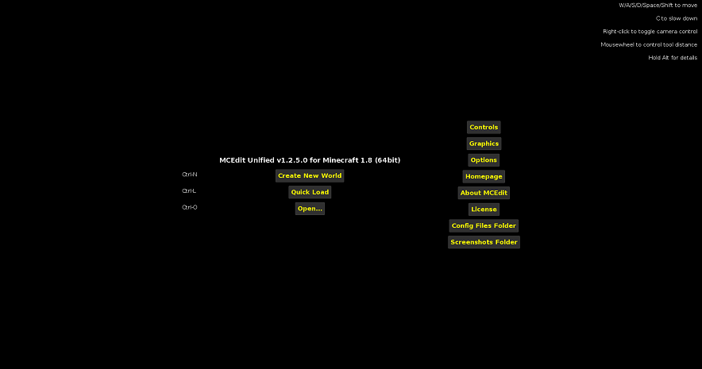
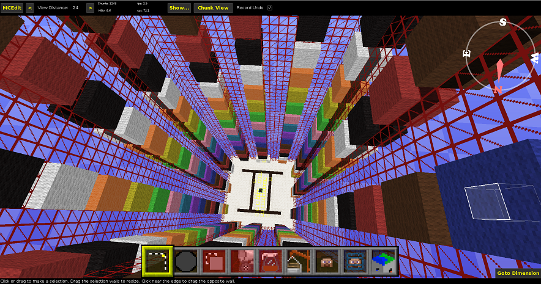

MCEdit is a versatile map utility, designed for editing Minecraft maps. With it, you can open a level.dat file and fly around in glorious 3D with multiple levels of detail! Select millions of blocks and clone them anywhere else in the world.
Fill a boxy selection with a block of your choice, or replace a type of block with another. Export blocks to a .schematic file for later use. Move the player(s) or his/her spawn point.
Create and remove chunks from the world. Fill blackened areas with light. Help us find bugs!
MCEdit was first created to allow players to preserve anything built with several old versions of Minecraft and take them forward into newer versions of the game.
It also aims to be forward-compatible with future (or even modified (check with MCEdit 2 for that one)) versions of Minecraft.
Over time (with the help of our lovely contributers) it has since been improved with numerous brush tools for laying down blocks in different shapes,
integration with the Minecraft Server to generate terrain using Minecraft’s own seed algorithms, support for multiplayer worlds, and filters to edit mob spawners, change mob properties, add cool things with command blocks, edit biomes and much more.
We also changed the name to MCEdit-Unified to give it a newer look since we added lots of new features and Codewarrior0 is now building MCEdit 2.
 
Image Shown: Diversity 2 World Spawn; Map made by Qmagnet
MCEdit-Unified is a third party utility and is not affiliated with Minecraft, Mojang AB, or Microsoft Inc.